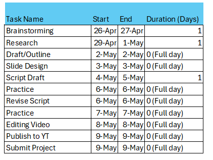

Assignment 15 - Summary

Session 10
For my final project, I have divided it into four main sections, each offering a unique perspective on search engines. To kick things off, we will take a stroll through the fascinating history of search engines. From their humble beginnings to the modern-day giants, we will uncover how they have evolved and shaped the way we navigate the vast expanse of the internet.
Next up, we will dive into the practical details of how these marvels work. We will peel back the layers of code and architecture to reveal the inner workings that power our favorite search engines. Finding out what makes them tick.
Then, we will turn our gaze towards the future. With artificial intelligence on the rise, we will ponder what lies ahead for search engines. Could we soon see AI-generated search results in the form of articles or even videos? It is an exciting prospect that opens a world of possibilities for how we access and interact with information online.
Lastly, we will tie it all together to a conclusion that sums up our journey. We will reflect on the milestones we have covered, the insights we have gained, and the questions that still linger. It is like reaching the end of a delightful book and taking a moment to savor the experience before turning the final page.
For project management I found the Gantt chart to be particularly useful, it helps someone like me who has ADHD keep a well-organized path to my goals.
I can use the concepts I have learned in a multitude of ways in my field. I will find myself using them to help others like I usually do, but less fun to learn for my own personal knowledge bank.